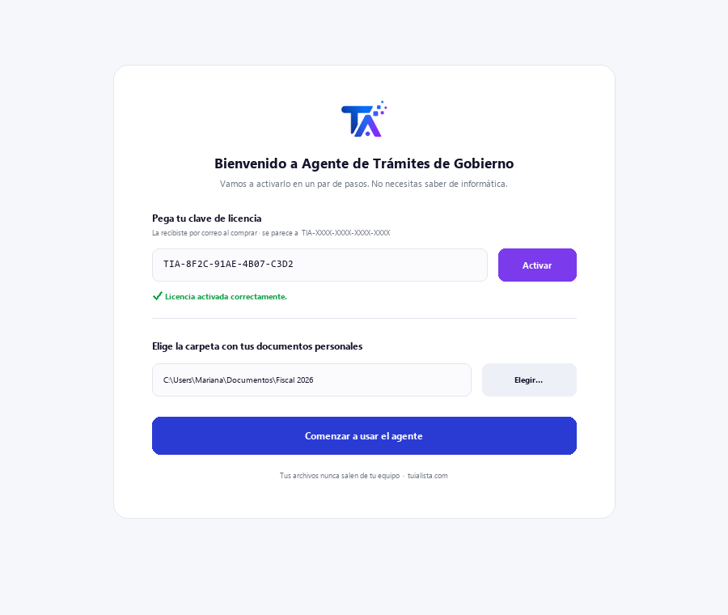
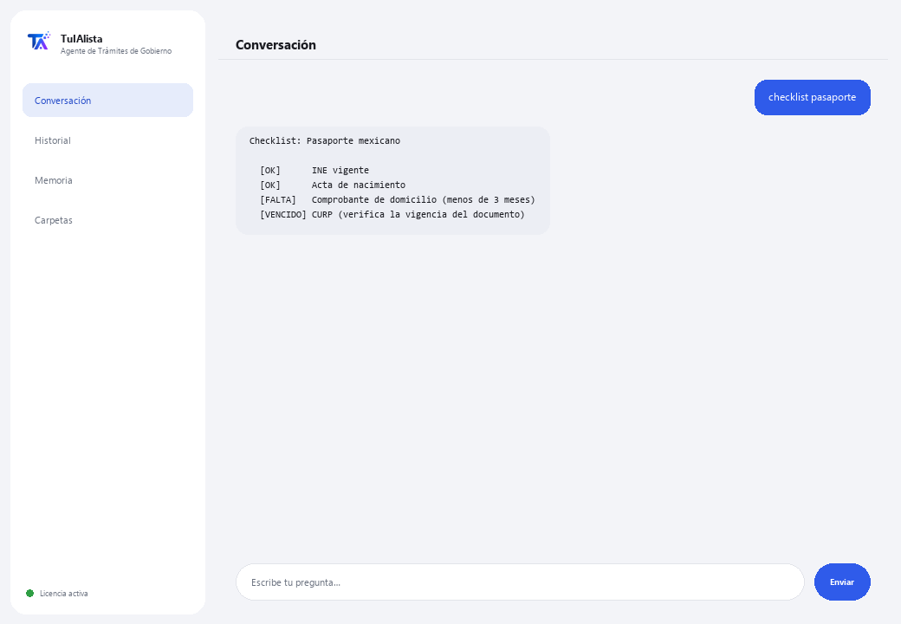

Agente de Trámites de Gobierno
Te guía paso a paso en trámites mexicanos y te dice qué documentos tienes y cuáles te faltan.
¿Qué resuelve y qué necesitas?
Un trámite mal preparado significa tiempo perdido, filas, rechazos y a veces multas. Este agente organiza tus documentos personales, arma el checklist de lo que ya tienes y lo que falta, y te prepara antes de acudir a la dependencia.
- Necesitas: tu clave de licencia (TIA-XXXX-XXXX-XXXX-XXXX) y la carpeta con tus documentos personales. Nada de Python ni conocimientos técnicos.
- Primer resultado en menos de 5 minutos: instalas, activas, eliges tu carpeta y corres documentos para ver qué tienes clasificado.
- Tus documentos nunca salen de tu computadora — la clasificación corre localmente.
soporte@tuialista.com o entra a tuialista.com/soporte — normalmente respondemos el mismo día hábil.1 Qué hace este agente
Tú le señalas la carpeta con tus documentos (identificaciones, comprobantes, actas, constancias) y él:
- Los lee y clasifica por tipo (INE, CURP, RFC, comprobante de domicilio, acta de nacimiento, etc.).
- Genera un checklist del trámite: qué requisitos ya tienes y cuáles te faltan.
- Detecta documentos próximos a vencer o vencidos (por ejemplo, un comprobante de domicilio de más de 3 meses).
- Produce una guía paso a paso del trámite (dependencia, requisitos, si se hace en línea, costos y tiempos aproximados).
- Responde tus preguntas: “¿qué necesito para renovar mi pasaporte?”
El resultado: llegas al trámite con todo en orden y sin sorpresas.
2 Instalación (2 minutos)
Para Windows. No hace falta internet permanente ni subir nada a la nube.
Baja el instalador desde tuialista.com/descargar (agente Trámites) y ábrelo. Crea un acceso directo en tu escritorio con el logo — no requiere Python ni terminal.
Doble clic al ícono nuevo. Pega tu clave de licencia (te llegó por correo al comprar) y pulsa Activar. Verás una palomita verde cuando sea válida.
Selecciona la carpeta con tus documentos personales y pulsa Comenzar a usar el agente. La próxima vez arranca directo — recuerda tu clave y tu carpeta.

3 Cómo usarlo
El agente abre una ventana de chat, como una app de mensajería — no es una pantalla negra de programador. Escribes tu comando o tu pregunta en el cuadro de texto de abajo, pulsas Enviar (o Enter), y la respuesta aparece como un mensaje, igual que en esta imagen real:

Los comandos siguientes son las palabras que puedes escribir en ese mismo cuadro de texto:
> documentosResumen de tus documentos, su tipo detectado y su estado (vigente / por vencer / vencido).
> checklist <trámite>Para un trámite (ej. pasaporte, ine, rfc), qué requisitos ya tienes (y si alguno está vencido) y cuáles te faltan.
> guia <trámite>Guía completa: dependencia, documentos, si se puede hacer en línea, pasos, consejos para evitar rechazos, costos y tiempos aproximados.
> falta <trámite>Solo lo que te falta para ese trámite, y si tienes alguno vencido.
> vencimientosDocumentos próximos a vencer o vencidos.
> tramitesCatálogo de trámites que el agente conoce (pasaporte, INE, RFC, CURP, licencia, IMSS, acta de nacimiento, constancia fiscal, e.firma...).
> ¿pregunta libre?Escribe cualquier duda en lenguaje natural, ej.: ¿puedo sacar mi CURP en línea?
> salirTermina la sesión (también funciona exit).
4 Ejemplos de uso común
Prepararte para el pasaporte
checklist pasaporte → falta pasaporte — ves qué requisitos tienes y qué te falta antes de sacar cita.
Guía completa de un trámite
guia acta
Revisar documentos por vencer
vencimientos — detectas si tu comprobante de domicilio ya no sirve por antigüedad.
Una duda puntual
¿qué necesito para inscribirme en el RFC?
5 Preguntas frecuentes
¿Mis documentos se suben a internet?
¿Qué formatos acepta?
¿Realiza el trámite por mí o lo agenda?
¿Genera documentos oficiales?
¿Cómo clasifica mis documentos?
¿La información de trámites está siempre actualizada?
¿En qué idioma me responde?
¿Lee un PDF escaneado?
¿Puedo cambiar la carpeta?
¿Es información oficial del gobierno?
6 Solución de problemas
No lee un .pdf o .docx
Un trámite no aparece
Muestra “0 documentos indexados”
Dice “Licencia no válida” o pide reconectar
“No hay proveedores de IA configurados”
¿Ninguna de estas soluciones resolvió tu problema? Escríbenos directamente — con gusto lo revisamos contigo.
soporte@tuialista.com o entra a tuialista.com/soporte — normalmente respondemos el mismo día hábil.7 Privacidad y confidencialidad
Tus documentos personales nunca salen de tu computadora.
- El agente lee y clasifica los archivos localmente, en tu propio equipo. No los sube a ningún servidor ni los comparte con dependencia alguna.
- La clasificación, el checklist y la detección de vencimientos ocurren en tu máquina.
- Lo único que viaja por internet es: (1) una comprobación de que tu licencia está activa — que no incluye tus documentos —, y (2) al generar una guía o hacer una pregunta, se envía un fragmento (tipo de documento y tu consulta) al motor de IA para redactar la respuesta.